Energy Consumption Analysis Of Commercial Buildings Using GAM
Author
Yuchen Xue
Published
June 30, 2018
Intro
This is the final assignment of the course “Regression Analysis” at National Taiwan University of Science and Technology (NTUST). The purpose of this final assignment is to test the students’ knowledge of the R language and their ability to analyze a dataset using a linear model.
In this assignment, I selected a modified version of the open source dataset published by the energy supply company EnerNOC, which contains the 30-minute energy consumption data for 100 commercial/industrial sites for the year 2012. I split the data into training and testing subset, built several linear models using Generalized Additive Model (GAM) with different conditions using the training set, predicted the energy consumption and examined the prediction result using the test data. The model could successfully generalize the change in energy consumption and achieved a MAPE value of 14.89.
1. Data Preparation
1.1 Introduction to the Dataset
EnerNOC GreenButton Data is a subset of the Open EnerNOC data repository. The raw data was provided by the EnerNOC electricity supplier and contains anonymous 5-minute electricity consumption data of 100 commercial/industrial sites for the year 2012. The simplified version contains data at 30-minute intervals.
# Download the data as a tempfile and loaded it locallyurl ="https://raw.githubusercontent.com/yuchen-xue/Learn-R-Quarto/main/content/data/DT_4_ind"GET(url, write_disk(tf <-tempfile(fileext ="")))
ggplot(data = DT, aes(x = date, y = value)) +geom_line() +facet_grid(type ~ ., scales ="free_y") +theme(panel.border =element_blank(),panel.background =element_blank(),panel.grid.minor =element_line(colour ="grey90"),panel.grid.major =element_line(colour ="grey90"),panel.grid.major.x =element_line(colour ="grey90"),axis.text =element_text(size =10),axis.title =element_text(size =12, face ="bold"),strip.text =element_text(size =9, face ="bold")) +labs(x ="Date", y ="Load (kW)")
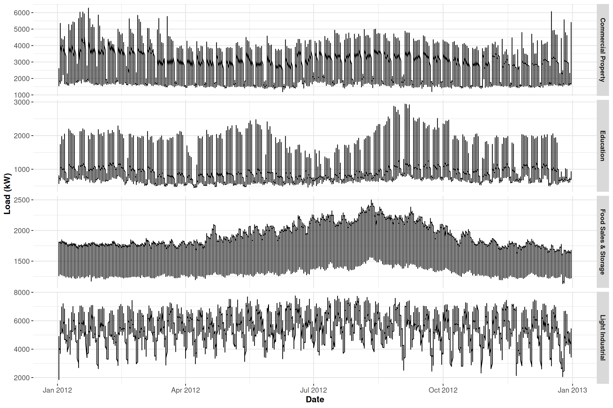
We can see that the electricity consumption of the category Food Sales & Storage is not affected by weekdays or weekends.
1.3 Processing of Information about Days and Weeks
We use the car::record() function to easily describe the relationship between the electricity consumption and each day of the week. We do this by appending a new column that associates each day of the week with a unique number.
We extract information related to “industry”, “data”, “week” and “period” from the dataset. Since the data was collected every half an hour, there’re 48 consecutive observations within a day, thus we have period <- 48.
We re-organize the data in accordance with the change of days and weeks.
N <-nrow(data_r) # number of rows in the training setwindow <- N / period # number of days in the training setmatrix_gam <-data.table(Load = data_r[, value],Daily =rep(1:period, window),Weekly = data_r[, week_num])head(matrix_gam)
We use the mgcv:gam() function to build the GAM model. The periodic change in days is described by a “cubic regression spline”, whereas the periodic change in weeks is described by “P-splines”.
gam_1 <-gam(Load ~s(Daily, bs ="cr", k = period) +s(Weekly, bs ="ps", k =7),data = matrix_gam,family = gaussian)
Inspect the summary of the model.
summary(gam_1)$r.sq
[1] 0.7718406
summary(gam_1)$sp.criterion
GCV.Cp
245544.9
GCV is an indicator of the fit of the model. The lower this value is, the fitter the model is. In addition we can see that R-sq is not high, which indicates the bad performance of the model.
Compare the difference between the prediction and the reality over those two weeks.
This model can only predict the trend of the weekdays’ electricity consumption, but fails in predicting the exact amount of electricity consumption. We do a detailed inspection on the electricity consumption on Monday.
The problem is that the real electricity consumption at the end of the day is not at the same level as it at the beginning of the day, but the model shows a pure periodic change within the day, which is different from the reality. Thus we need to change our mindset and build another model.
2.2 The Second Model
This time we use the method of interaction between different scale and build a model by combining Daily and Weekly.
Column 2 ['data_time'] of item 2 is missing in item 1. Use fill=TRUE to fill with NA (NULL for list columns), or use.names=FALSE to ignore column names. use.names='check' (default from v1.12.2) emits this message and proceeds as if use.names=FALSE for backwards compatibility. See news item 5 in v1.12.2 for options to control this message.
datas[, type :=c(rep("Real", nrow(data_r)), rep("Fitted", nrow(data_r)))]ggplot(data = datas, aes(date_time, value, group = type, colour = type)) +geom_line(size =0.8) +theme_bw() +labs(x ="Time", y ="Load (kW)",title ="Fit from GAM n.2")
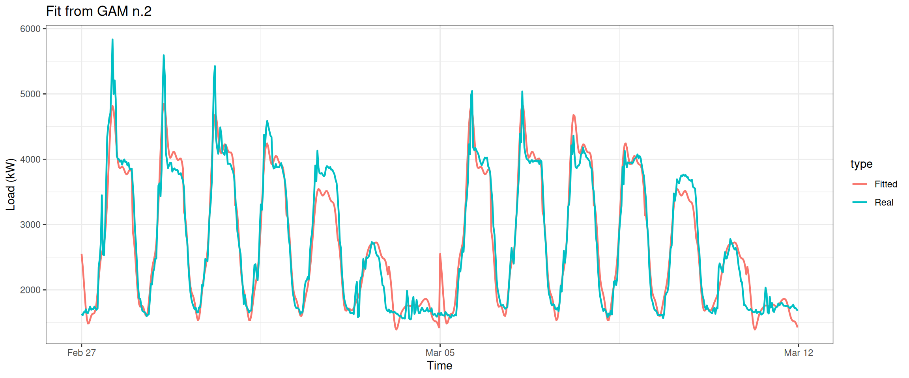
We can see that the fit during Monday to Thursday significantly improved.
2.3 The Third Model
Next, we use another advanced method of interaction and use a smooth function called “tensor product”.
Column 2 ['data_time'] of item 2 is missing in item 1. Use fill=TRUE to fill with NA (NULL for list columns), or use.names=FALSE to ignore column names. use.names='check' (default from v1.12.2) emits this message and proceeds as if use.names=FALSE for backwards compatibility. See news item 5 in v1.12.2 for options to control this message.
datas[, type :=c(rep("Real", nrow(data_r)), rep("Fitted", nrow(data_r)))]ggplot(data = datas, aes(date_time, value, group = type, colour = type)) +geom_line(size =0.8) +theme_bw() +labs(x ="Time", y ="Load (kW)",title ="Fit from GAM n.3")
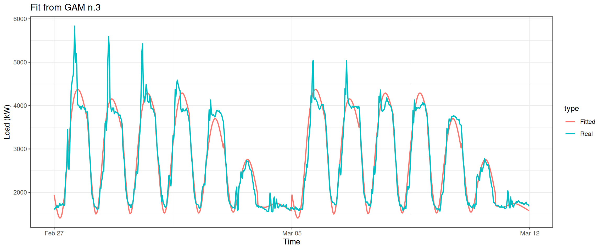
2.4 The Fourth Model
We can make it even better. For example let the knots (a concept that is similar to dimension) fit the periodic change of days and weeks better.
Column 2 ['data_time'] of item 2 is missing in item 1. Use fill=TRUE to fill with NA (NULL for list columns), or use.names=FALSE to ignore column names. use.names='check' (default from v1.12.2) emits this message and proceeds as if use.names=FALSE for backwards compatibility. See news item 5 in v1.12.2 for options to control this message.
datas[, type :=c(rep("Real", nrow(data_r)), rep("Fitted", nrow(data_r)))]ggplot(data = datas, aes(date_time, value, group = type, colour = type)) +geom_line(size =0.8) +theme_bw() +labs(x ="Time", y ="Load (kW)",title ="Fit from GAM n.4")
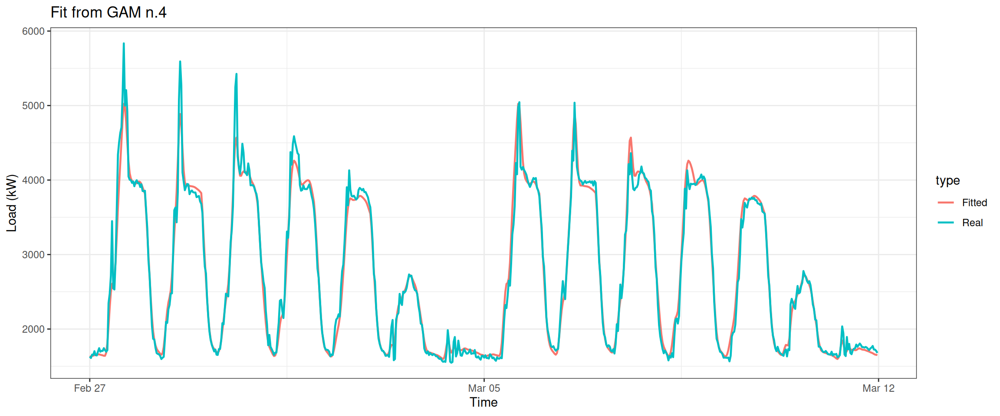
2.5 The Fifth Model
All right, what about be greedier and combine all the previous models? Let’s examine our thought by building gam_5.
Column 2 ['data_time'] of item 2 is missing in item 1. Use fill=TRUE to fill with NA (NULL for list columns), or use.names=FALSE to ignore column names. use.names='check' (default from v1.12.2) emits this message and proceeds as if use.names=FALSE for backwards compatibility. See news item 5 in v1.12.2 for options to control this message.
datas[, type :=c(rep("Real", nrow(data_r)), rep("Fitted", nrow(data_r)))]ggplot(data = datas, aes(date_time, value, group = type, colour = type)) +geom_line(size =0.8) +theme_bw() +labs(x ="Time", y ="Load (kW)",title ="Fit from GAM n.5")
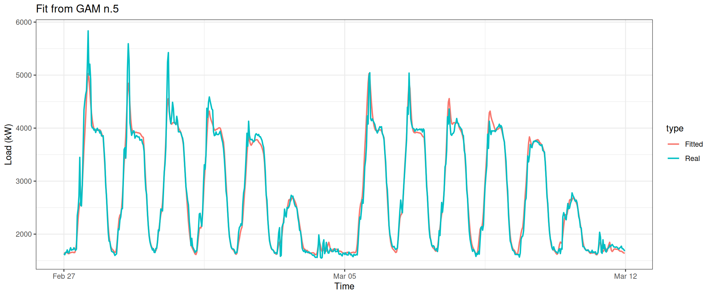
2.6 The Sixth Model
Now is our last attempt. Here we add another method of tensor product interations and introduce a stricter condition by setting full = TRUE.
Column 2 ['data_time'] of item 2 is missing in item 1. Use fill=TRUE to fill with NA (NULL for list columns), or use.names=FALSE to ignore column names. use.names='check' (default from v1.12.2) emits this message and proceeds as if use.names=FALSE for backwards compatibility. See news item 5 in v1.12.2 for options to control this message.
datas[, type :=c(rep("Real", nrow(data_r)), rep("Fitted", nrow(data_r)))]ggplot(data = datas, aes(date_time, value, group = type, colour = type)) +geom_line(size =0.8) +theme_bw() +labs(x ="Time", y ="Load (kW)",title ="Fit from GAM n.6")
This plot looks even better.
2.7 Comparison of the Models
With so many models, how to decide which one is the best? Just ask the omnipotent AIC.
Apparently gam_4, gam_5, gam_6 are on the leading board. gam_6 has the best performance, while gam_4 comes in second.
Next we plot gam_4, gam_6 together and see what we found.
layout(matrix(1:2, nrow =1))plot(gam_4, rug =FALSE, se =FALSE, n2 =80, main ="gam n.4 with te()")plot(gam_6, rug =FALSE, se =FALSE, n2 =80, main ="gam n.6 with t2()")
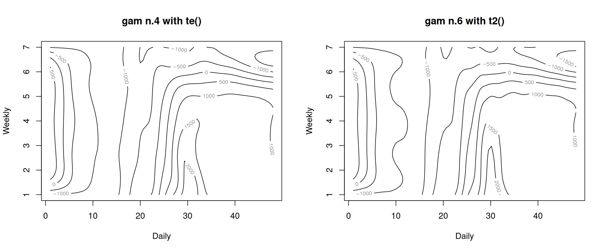
These contour lines indicate each model’s response on Weekly and Daily. Although they look similar, the contour of gam_6 has more wave-like patterns. This is an indication of its higher sensitivity.
Visualization of the Best Performing Model
Before the end of this section, let’s see what we can do to make the plot of gam_6 looks better. Firstly we use the vis.gam function from the package mgcv.
# vis.gam(gam_6, main = "t2(D, W)", plot.type = "contour",# color = "terrain", contour.col = "black", lwd = 2)vis.gam(gam_6, main ="t2(D, W)", color ="terrain", contour.col ="black", lwd =2)
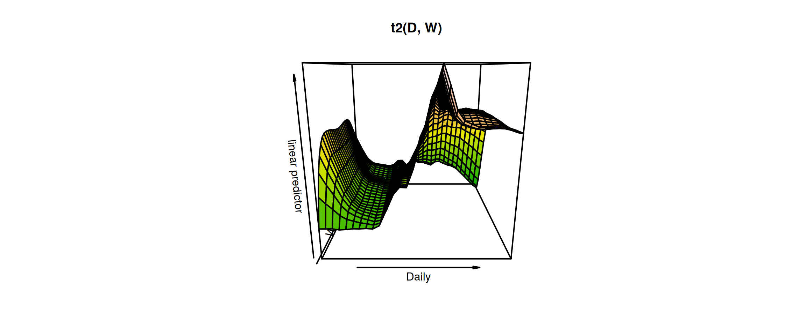
We can see that the electricity consumption on weekdays are higher than on weekends. The peak hours are arround 3 pm from Monday to Thursday.
Without using the contour.col option, we can make a 3D plot.
vis.gam(gam_6, n.grid =50, theta =35, phi =32, zlab ="",ticktype ="detailed", color ="topo", main ="t2(D, W)")
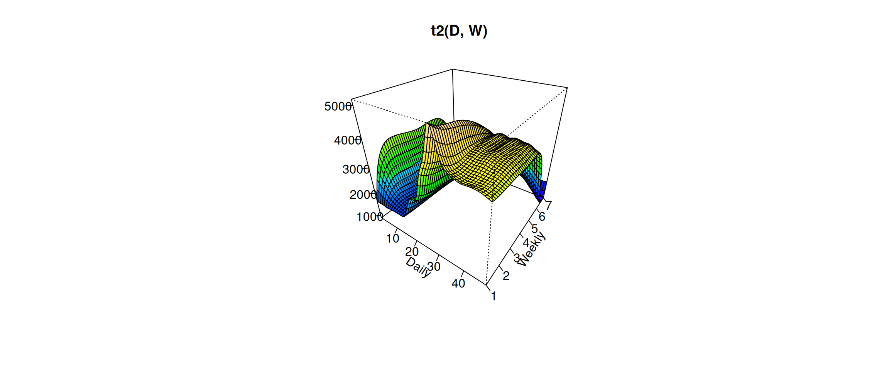
Change the viewing angle
vis.gam(gam_6, n.grid =50, theta =190, phi =20, zlab ="",ticktype ="detailed", color ="topo", main ="t2(D, W)")
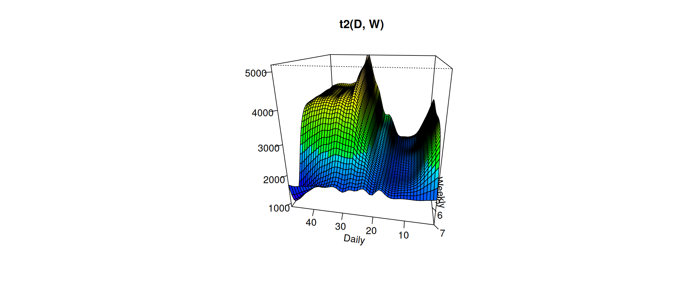
3. Analysis of the Contribution of Each Explanatory Variable
3.1 Models Building
Now let’s see what would happen if we discard explanatory variables one by one.
Let’s maintain a rigorous attitude and use ANOVA to compare the difference between these three leading models. Firstly we discard variable Weekly and see what will happen
anova(gam_6, gam_6D, test="F")
Analysis of Deviance Table
Model 1: Load ~ t2(Daily, Weekly, k = c(period, 7), bs = c("cr", "ps"),
full = TRUE)
Model 2: Load ~ t2(Daily, k = period, bs = "cr", full = TRUE)
Resid. Df Resid. Dev Df Deviance F Pr(>F)
1 550.77 15740821
2 661.13 339050831 -110.37 -323310010 106.61 < 2.2e-16 ***
---
Signif. codes: 0 '***' 0.001 '**' 0.01 '*' 0.05 '.' 0.1 ' ' 1
Then we discard variable Daily and see what will happen
anova(gam_6, gam_6W, test="F")
Analysis of Deviance Table
Model 1: Load ~ t2(Daily, Weekly, k = c(period, 7), bs = c("cr", "ps"),
full = TRUE)
Model 2: Load ~ t2(Weekly, k = 7, bs = "ps", full = TRUE)
Resid. Df Resid. Dev Df Deviance F Pr(>F)
1 550.77 15740821
2 667.88 526095056 -117.11 -510354235 158.6 < 2.2e-16 ***
---
Signif. codes: 0 '***' 0.001 '**' 0.01 '*' 0.05 '.' 0.1 ' ' 1
The result is clear – non of the variable Weekly and variable Daily can be dropped!
Column 2 ['data_time'] of item 2 is missing in item 1. Use fill=TRUE to fill with NA (NULL for list columns), or use.names=FALSE to ignore column names. use.names='check' (default from v1.12.2) emits this message and proceeds as if use.names=FALSE for backwards compatibility. See news item 5 in v1.12.2 for options to control this message.
datas[, type :=c(rep("Real", nrow(data_r)), rep("Fitted", nrow(data_r)))]ggplot(data = datas, aes(date_time, value, group = type, colour = type)) +geom_line(size =0.8) +theme_bw() +labs(x ="Time", y ="Load (kW)",title ="Fit from GAM n.6")
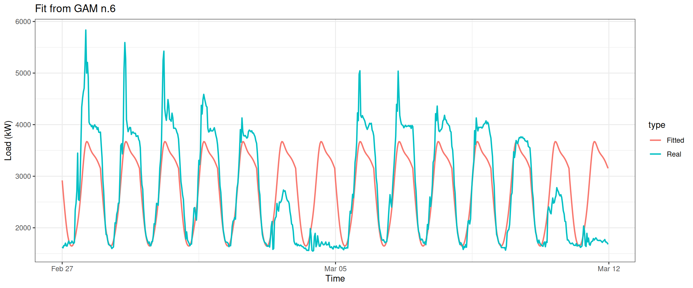
We can see that there is no weekly difference in the electricity consumption when the variable Weekly is dropped.
Column 2 ['data_time'] of item 2 is missing in item 1. Use fill=TRUE to fill with NA (NULL for list columns), or use.names=FALSE to ignore column names. use.names='check' (default from v1.12.2) emits this message and proceeds as if use.names=FALSE for backwards compatibility. See news item 5 in v1.12.2 for options to control this message.
datas[, type :=c(rep("Real", nrow(data_r)), rep("Fitted", nrow(data_r)))]ggplot(data = datas, aes(date_time, value, group = type, colour = type)) +geom_line(size =0.8) +theme_bw() +labs(x ="Time", y ="Load (kW)",title ="Fit from GAM n.6")
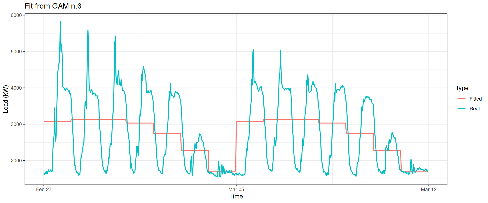
We can see that there is no difference in the electricity consumption over the 24 hours of a day when the variable Daily is dropped.
4. Prediction on Electricity Consumption
Lastly, the most exciting part – let’s predict the electricity consumption for the next two weeks.
Column 2 ['data_time'] of item 2 is missing in item 1. Use fill=TRUE to fill with NA (NULL for list columns), or use.names=FALSE to ignore column names. use.names='check' (default from v1.12.2) emits this message and proceeds as if use.names=FALSE for backwards compatibility. See news item 5 in v1.12.2 for options to control this message.
datat[, type :=c(rep("Real", nrow(data_test)), rep("Predicted", nrow(data_test)))]ggplot(data = datat, aes(date_time, value, group = type, colour = type)) +geom_line(size =0.8) +theme_bw() +labs(x ="Time", y ="Load (kW)",title ="Predicted result on GAM n.6")
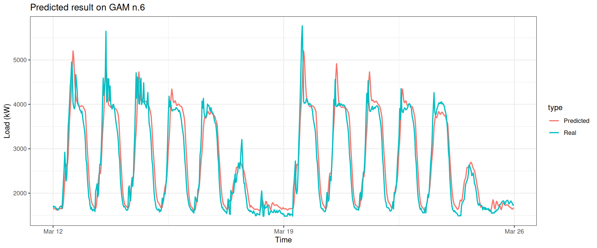
Predict the electricity consumption of the next month.
Column 2 ['data_time'] of item 2 is missing in item 1. Use fill=TRUE to fill with NA (NULL for list columns), or use.names=FALSE to ignore column names. use.names='check' (default from v1.12.2) emits this message and proceeds as if use.names=FALSE for backwards compatibility. See news item 5 in v1.12.2 for options to control this message.
datat[, type :=c(rep("Real", nrow(data_test)), rep("Predicted", nrow(data_test)))]ggplot(data = datat, aes(date_time, value, group = type, colour = type)) +geom_line(size =0.8) +theme_bw() +labs(x ="Time", y ="Load (kW)",title ="Predicted result on GAM n.6")
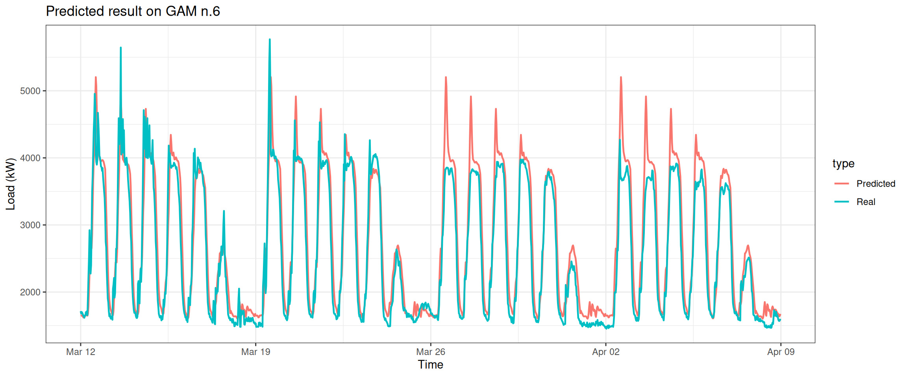
5 Additional Information
Additional content that was added at the end of the semester.
Warning in as.data.table.list(x, keep.rownames = keep.rownames, check.names =
check.names, : Item 4 has 672 rows but longest item has 4368; recycled with
remainder.
Warning in as.data.table.list(x, keep.rownames = keep.rownames, check.names =
check.names, : Item 5 has 672 rows but longest item has 4368; recycled with
remainder.
Build the first model.
gam_new_1 <-gam(Load ~s(Daily, bs ="cr", k = period) +s(Weekly, bs ="ps", k =7),data = matrix_new,family = gaussian)
Column 2 ['data_time'] of item 2 is missing in item 1. Use fill=TRUE to fill with NA (NULL for list columns), or use.names=FALSE to ignore column names. use.names='check' (default from v1.12.2) emits this message and proceeds as if use.names=FALSE for backwards compatibility. See news item 5 in v1.12.2 for options to control this message.
Column 2 ['data_time'] of item 2 is missing in item 1. Use fill=TRUE to fill with NA (NULL for list columns), or use.names=FALSE to ignore column names. use.names='check' (default from v1.12.2) emits this message and proceeds as if use.names=FALSE for backwards compatibility. See news item 5 in v1.12.2 for options to control this message.
Column 2 ['data_time'] of item 2 is missing in item 1. Use fill=TRUE to fill with NA (NULL for list columns), or use.names=FALSE to ignore column names. use.names='check' (default from v1.12.2) emits this message and proceeds as if use.names=FALSE for backwards compatibility. See news item 5 in v1.12.2 for options to control this message.
Column 2 ['data_time'] of item 2 is missing in item 1. Use fill=TRUE to fill with NA (NULL for list columns), or use.names=FALSE to ignore column names. use.names='check' (default from v1.12.2) emits this message and proceeds as if use.names=FALSE for backwards compatibility. See news item 5 in v1.12.2 for options to control this message.
Column 2 ['data_time'] of item 2 is missing in item 1. Use fill=TRUE to fill with NA (NULL for list columns), or use.names=FALSE to ignore column names. use.names='check' (default from v1.12.2) emits this message and proceeds as if use.names=FALSE for backwards compatibility. See news item 5 in v1.12.2 for options to control this message.
Column 2 ['data_time'] of item 2 is missing in item 1. Use fill=TRUE to fill with NA (NULL for list columns), or use.names=FALSE to ignore column names. use.names='check' (default from v1.12.2) emits this message and proceeds as if use.names=FALSE for backwards compatibility. See news item 5 in v1.12.2 for options to control this message.
Build the seventh model – without using smooth function of GAM.
gam_plot(gam_new_simple, "Fit from gam_new_simple")
Column 2 ['data_time'] of item 2 is missing in item 1. Use fill=TRUE to fill with NA (NULL for list columns), or use.names=FALSE to ignore column names. use.names='check' (default from v1.12.2) emits this message and proceeds as if use.names=FALSE for backwards compatibility. See news item 5 in v1.12.2 for options to control this message.
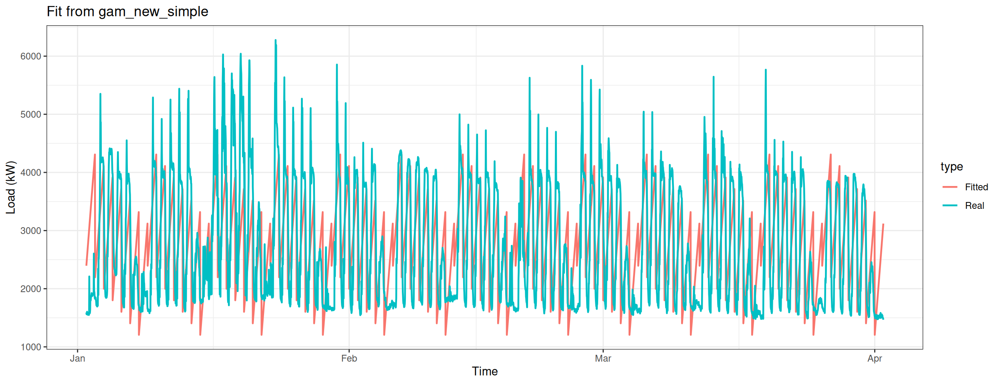
Build the eighth model – only apply te smooth function on the variable Daily.
gam_plot(gam_new_te_daily, "Fit from gam_new_te_daily")
Column 2 ['data_time'] of item 2 is missing in item 1. Use fill=TRUE to fill with NA (NULL for list columns), or use.names=FALSE to ignore column names. use.names='check' (default from v1.12.2) emits this message and proceeds as if use.names=FALSE for backwards compatibility. See news item 5 in v1.12.2 for options to control this message.
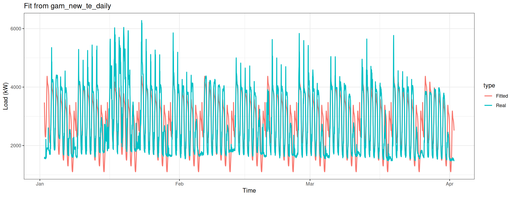
Build the nineth model – only apply te smooth function on the variable Weekly.
gam_plot(gam_new_te_weekly, "Fit from gam_new_te_weekly")
Column 2 ['data_time'] of item 2 is missing in item 1. Use fill=TRUE to fill with NA (NULL for list columns), or use.names=FALSE to ignore column names. use.names='check' (default from v1.12.2) emits this message and proceeds as if use.names=FALSE for backwards compatibility. See news item 5 in v1.12.2 for options to control this message.
Column 2 ['data_time'] of item 2 is missing in item 1. Use fill=TRUE to fill with NA (NULL for list columns), or use.names=FALSE to ignore column names. use.names='check' (default from v1.12.2) emits this message and proceeds as if use.names=FALSE for backwards compatibility. See news item 5 in v1.12.2 for options to control this message.
datat[, type :=c(rep("Real", nrow(data_test_2qt)), rep("Predicted", nrow(data_test_2qt)))]ggplot(data = datat, aes(date_time, value, group = type, colour = type)) +geom_line(size =0.8) +theme_bw() +labs(x ="Time", y ="Load (kW)",title ="Predicted result on GAM n.6")
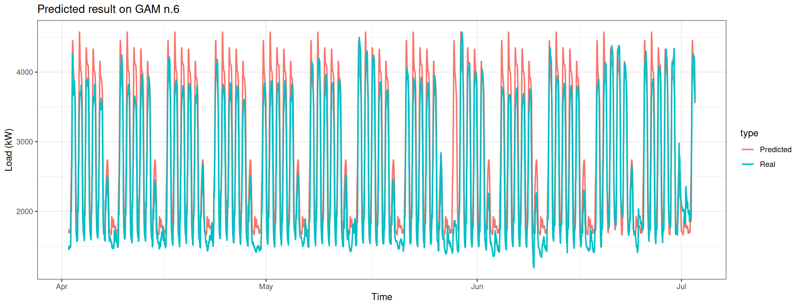
Predict the electricity consumption of season 3 using the fourth model.
Column 2 ['data_time'] of item 2 is missing in item 1. Use fill=TRUE to fill with NA (NULL for list columns), or use.names=FALSE to ignore column names. use.names='check' (default from v1.12.2) emits this message and proceeds as if use.names=FALSE for backwards compatibility. See news item 5 in v1.12.2 for options to control this message.
datat[, type :=c(rep("Real", nrow(data_test_3qt)), rep("Predicted", nrow(data_test_3qt)))]ggplot(data = datat, aes(date_time, value, group = type, colour = type)) +geom_line(size =0.8) +theme_bw() +labs(x ="Time", y ="Load (kW)",title ="Predicted result on GAM n.6")
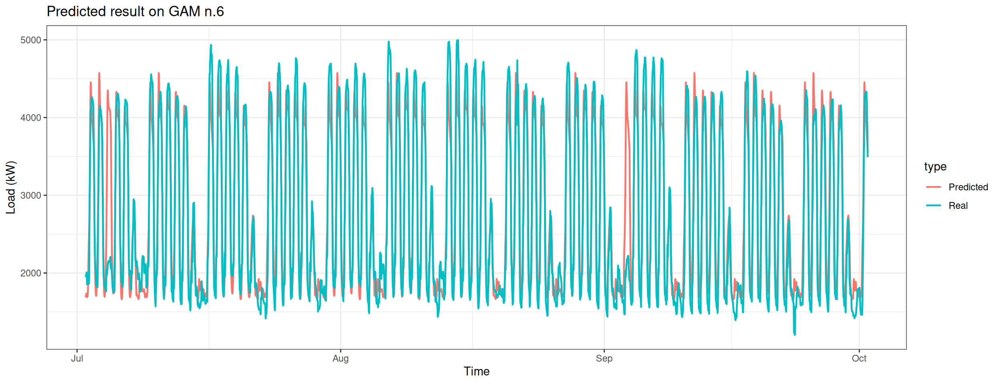
Predict the electricity consumption of season 4 using the fourth model.
Column 2 ['data_time'] of item 2 is missing in item 1. Use fill=TRUE to fill with NA (NULL for list columns), or use.names=FALSE to ignore column names. use.names='check' (default from v1.12.2) emits this message and proceeds as if use.names=FALSE for backwards compatibility. See news item 5 in v1.12.2 for options to control this message.
datat[, type :=c(rep("Real", nrow(data_test_4qt)), rep("Predicted", nrow(data_test_4qt)))]ggplot(data = datat, aes(date_time, value, group = type, colour = type)) +geom_line(size =0.8) +theme_bw() +labs(x ="Time", y ="Load (kW)",title ="Predicted result on GAM n.6")
---title: "Energy Consumption Analysis Of Commercial Buildings Using GAM"author: "Yuchen Xue"date: "06/30/2018"---## IntroThis is the final assignment of the course “Regression Analysis” at National Taiwan University of Science and Technology (NTUST). The purpose of this final assignment is to test the students' knowledge of the R language and their ability to analyze a dataset using a linear model.In this assignment, I selected a modified version of the open source dataset published by the energy supply company EnerNOC, which contains the 30-minute energy consumption data for 100 commercial/industrial sites for the year 2012. I split the data into training and testing subset, built several linear models using Generalized Additive Model (GAM) with different conditions using the training set, predicted the energy consumption and examined the prediction result using the test data. The model could successfully generalize the change in energy consumption and achieved a MAPE value of 14.89.```{r setup, include=FALSE, message=FALSE, warning=FALSE}library(knitr)opts_chunk$set(echo = TRUE)```## 1. Data Preparation### 1.1 Introduction to the DatasetEnerNOC GreenButton Data is a subset of the [Open EnerNOC data repository](https://open-enernoc-data.s3.amazonaws.com/anon/index.html).The raw data was provided by the EnerNOC electricity supplier and contains anonymous 5-minute electricity consumption data of 100 commercial/industrial sites for the year 2012.[The simplified version](https://github.com/PetoLau/petolau.github.io/tree/master/_rmd) contains data at 30-minute intervals.The explanatory variables are:* value: Electricity consumption by timestamp* week: In which week was the data collected* date: On which day was the data collected* type: Type of the building### 1.2 Overview of the DatasetLoad Necessary Packages.```{r, warning=FALSE}library(httr)library(feather)library(data.table)library(mgcv)library(car)library(ggplot2)library(dplyr, warn.conflicts = FALSE)```Read the Data and show the overview of the data.```{r, warning=FALSE}# Download the data as a tempfile and loaded it locallyurl = "https://raw.githubusercontent.com/yuchen-xue/Learn-R-Quarto/main/content/data/DT_4_ind"GET(url, write_disk(tf <- tempfile(fileext = "")))DT <- as.data.table(read_feather(tf))# Remove the tempfileunlink(tf)str(DT)```Plot the Data.```{r fig1, fig.height = 8, fig.width = 12, fig.align = "center", na.rm=TRUE, warning=FALSE}ggplot(data = DT, aes(x = date, y = value)) + geom_line() + facet_grid(type ~ ., scales = "free_y") + theme(panel.border = element_blank(), panel.background = element_blank(), panel.grid.minor = element_line(colour = "grey90"), panel.grid.major = element_line(colour = "grey90"), panel.grid.major.x = element_line(colour = "grey90"), axis.text = element_text(size = 10), axis.title = element_text(size = 12, face = "bold"), strip.text = element_text(size = 9, face = "bold")) + labs(x = "Date", y = "Load (kW)")```We can see that the electricity consumption of the category `Food Sales & Storage` is not affected by weekdays or weekends.### 1.3 Processing of Information about Days and WeeksWe use the `car::record()` function to easily describe the relationship between the electricity consumption and each day of the week. We do this by appending a new column that associates each day of the week with a unique number.```{r}DT[, week_num :=as.integer(car::recode(week,"'Monday'='1';'Tuesday'='2';'Wednesday'='3';'Thursday'='4'; 'Friday'='5';'Saturday'='6';'Sunday'='7'"))]unique(DT[, week])unique(DT[, week_num])```We extract information related to "industry", "data", "week" and "period" from the dataset. Since the data was collected every half an hour, there're 48 consecutive observations within a day, thus we have `period <- 48`.```{r}n_type <-unique(DT[, type])n_date <-unique(DT[, date])n_weekdays <-unique(DT[, week])period <-48```We select the electricity consumption of a commercial building, store it as the variable `data_r` and plot the data.`type == n_type[1]` stands for "Commercial Property", whereas `date %in% n_date[57:70]` corresponds to two weeks.```{r, fig2, fig.height = 6, fig.width = 12, fig.align = "center", na.rm=TRUE, warning=FALSE}data_r <- DT[(type == n_type[1] & date %in% n_date[57:70])]ggplot(data_r, aes(date_time, value)) + geom_line() + theme(panel.border = element_blank(), panel.background = element_blank(), panel.grid.minor = element_line(colour = "grey90"), panel.grid.major = element_line(colour = "grey90"), panel.grid.major.x = element_line(colour = "grey90"), axis.text = element_text(size = 10), axis.title = element_text(size = 12, face = "bold")) + labs(x = "Date", y = "Load (kW)")```We re-organize the data in accordance with the change of days and weeks.```{r, fig.width=12}N <- nrow(data_r) # number of rows in the training setwindow <- N / period # number of days in the training setmatrix_gam <- data.table(Load = data_r[, value], Daily = rep(1:period, window), Weekly = data_r[, week_num])head(matrix_gam)```## 2. Model Building### 2.1 The First ModelWe use the `mgcv:gam()` function to build the GAM model. The periodic change in days is described by a "cubic regression spline", whereas the periodic change in weeks is described by "P-splines".```{r}gam_1 <-gam(Load ~s(Daily, bs ="cr", k = period) +s(Weekly, bs ="ps", k =7),data = matrix_gam,family = gaussian)```Inspect the summary of the model.```{r}summary(gam_1)$r.sqsummary(gam_1)$sp.criterion````GCV` is an indicator of the fit of the model. The lower this value is, the fitter the model is. In addition we can see that `R-sq` is not high, which indicates the bad performance of the model.Compare the difference between the prediction and the reality over those two weeks.```{r, fig.width=12, na.rm=TRUE, warning=FALSE}matrix_gam$Predict=gam_1$fitted.valuesggplot(matrix_gam[1:nrow(matrix_gam),], aes(1:nrow(matrix_gam)))+ labs("lab")+ geom_line(aes(y=Load, color="Real"), size = 0.8)+ geom_line(aes(y = Predict, color = "Predict"), size = 0.8)```It doesn't look nice. We carefully inspect the electricity consumption during the first week.```{r, fig.width=12, na.rm=TRUE, warning=FALSE}row_Mon <- nrow(matrix_gam)/2matrix_gam$Predict=gam_1$fitted.valuesggplot(matrix_gam[1:row_Mon,], aes(1:row_Mon))+ labs("lab")+ geom_line(aes(y=Load, color="Real"), size = 0.8)+ geom_line(aes(y = Predict, color = "Predict"), size = 0.8)```This model can only predict the *trend* of the weekdays' electricity consumption, but fails in predicting the exact *amount* of electricity consumption. We do a detailed inspection on the electricity consumption on Monday.```{r, fig.width=12, na.rm=TRUE, warning=FALSE}row_Mon <- nrow(matrix_gam)/14matrix_gam$Predict=gam_1$fitted.valuesggplot(matrix_gam[1:row_Mon,], aes(1:row_Mon))+ labs("lab")+ geom_line(aes(y=Load, color="Real"), size = 0.8)+ geom_line(aes(y = Predict, color = "Predict"), size = 0.8)```The problem is that the real electricity consumption at the end of the day is not at the same level as it at the beginning of the day, but the model shows a pure periodic change within the day, which is different from the reality. Thus we need to change our mindset and build another model.### 2.2 The Second ModelThis time we use the method of interaction between different scale and build a model by combining `Daily` and `Weekly`.```{r}gam_2 <-gam(Load ~s(Daily, Weekly),data = matrix_gam,family = gaussian)summary(gam_2)$r.sqsummary(gam_2)$sp.criterion```According to `R.sq` and `p-value`, we can say that this model performs better.Plot the difference between predicted result and the real result.```{r, fig.width=12, na.rm=TRUE, warning=FALSE}datas <- rbindlist(list(data_r[, .(value, date_time)], data.table(value = gam_2$fitted.values, data_time = data_r[, date_time])))datas[, type := c(rep("Real", nrow(data_r)), rep("Fitted", nrow(data_r)))]ggplot(data = datas, aes(date_time, value, group = type, colour = type)) + geom_line(size = 0.8) + theme_bw() + labs(x = "Time", y = "Load (kW)", title = "Fit from GAM n.2")```We can see that the fit during Monday to Thursday significantly improved.### 2.3 The Third ModelNext, we use another advanced method of interaction and use a smooth function called "tensor product".```{r}gam_3 <-gam(Load ~te(Daily, Weekly,bs =c("cr", "ps")),data = matrix_gam,family = gaussian)summary(gam_3)$r.sqsummary(gam_3)$sp.criterion```Plot `gam_3`.```{r, fig.width=12, na.rm=TRUE, warning=FALSE}datas <- rbindlist(list(data_r[, .(value, date_time)], data.table(value = gam_3$fitted.values, data_time = data_r[, date_time])))datas[, type := c(rep("Real", nrow(data_r)), rep("Fitted", nrow(data_r)))]ggplot(data = datas, aes(date_time, value, group = type, colour = type)) + geom_line(size = 0.8) + theme_bw() + labs(x = "Time", y = "Load (kW)", title = "Fit from GAM n.3")```### 2.4 The Fourth ModelWe can make it even better. For example let the knots (a concept that is similar to dimension) fit the periodic change of days and weeks better.```{r}gam_4 <-gam(Load ~te(Daily, Weekly,k =c(period, 7),bs =c("cr", "ps")),data = matrix_gam,family = gaussian)summary(gam_4)$r.sqsummary(gam_4)$sp.criterion```We can see that `R-sq` has increased a little bit. But the most significant is `edf`, which has increased 5 times. Plot `gam_4````{r, fig.width=12, na.rm=TRUE, warning=FALSE}datas <- rbindlist(list(data_r[, .(value, date_time)], data.table(value = gam_4$fitted.values, data_time = data_r[, date_time])))datas[, type := c(rep("Real", nrow(data_r)), rep("Fitted", nrow(data_r)))]ggplot(data = datas, aes(date_time, value, group = type, colour = type)) + geom_line(size = 0.8) + theme_bw() + labs(x = "Time", y = "Load (kW)", title = "Fit from GAM n.4")```### 2.5 The Fifth ModelAll right, what about be greedier and combine all the previous models? Let's examine our thought by building `gam_5`.```{r}gam_5 <-gam(Load ~s(Daily, bs ="cr", k = period) +s(Weekly, bs ="ps", k =7) +ti(Daily, Weekly,k =c(period, 7),bs =c("cr", "ps")),data = matrix_gam,family = gaussian)summary(gam_5)$r.sqsummary(gam_5)$sp.criterion```Although `p-value` remains $0$, but `R-sq` decreased and `GCV` increased. This means that the performance is not as good as the previous `gam_4` model.Plot `gam_5`.```{r, fig.width=12, na.rm=TRUE, warning=FALSE}datas <- rbindlist(list(data_r[, .(value, date_time)], data.table(value = gam_5$fitted.values, data_time = data_r[, date_time])))datas[, type := c(rep("Real", nrow(data_r)), rep("Fitted", nrow(data_r)))]ggplot(data = datas, aes(date_time, value, group = type, colour = type)) + geom_line(size = 0.8) + theme_bw() + labs(x = "Time", y = "Load (kW)", title = "Fit from GAM n.5")```### 2.6 The Sixth ModelNow is our last attempt. Here we add another method of tensor product interations and introduce a stricter condition by setting `full = TRUE`.```{r}gam_6 <-gam(Load ~t2(Daily, Weekly,k =c(period, 7),bs =c("cr", "ps"),full =TRUE),data = matrix_gam,family = gaussian)summary(gam_6)$r.sqsummary(gam_6)$sp.criterion```Plot `gam_6`.```{r, fig.width=12, na.rm=TRUE, warning=FALSE}datas <- rbindlist(list(data_r[, .(value, date_time)], data.table(value = gam_6$fitted.values, data_time = data_r[, date_time])))datas[, type := c(rep("Real", nrow(data_r)), rep("Fitted", nrow(data_r)))]ggplot(data = datas, aes(date_time, value, group = type, colour = type)) + geom_line(size = 0.8) + theme_bw() + labs(x = "Time", y = "Load (kW)", title = "Fit from GAM n.6")```This plot looks even better.### 2.7 Comparison of the ModelsWith so many models, how to decide which one is the best? Just ask the omnipotent `AIC`.```{r}AIC(gam_1, gam_2, gam_3, gam_4, gam_5, gam_6)```Apparently `gam_4`, `gam_5`, `gam_6` are on the leading board. `gam_6` has the best performance, while `gam_4` comes in second.Next we plot `gam_4`, `gam_6` together and see what we found.```{r, fig.width=12, na.rm=TRUE}layout(matrix(1:2, nrow = 1))plot(gam_4, rug = FALSE, se = FALSE, n2 = 80, main = "gam n.4 with te()")plot(gam_6, rug = FALSE, se = FALSE, n2 = 80, main = "gam n.6 with t2()")```These contour lines indicate each model's response on `Weekly` and `Daily`. Although they look similar, the contour of `gam_6` has more wave-like patterns. This is an indication of its higher sensitivity.### Visualization of the Best Performing ModelBefore the end of this section, let's see what we can do to make the plot of `gam_6` looks better. Firstly we use the `vis.gam` function from the package `mgcv`.```{r, fig.width=12, na.rm=TRUE}# vis.gam(gam_6, main = "t2(D, W)", plot.type = "contour",# color = "terrain", contour.col = "black", lwd = 2)vis.gam(gam_6, main = "t2(D, W)", color = "terrain", contour.col = "black", lwd = 2)```We can see that the electricity consumption on weekdays are higher than on weekends. The peak hours are arround 3 pm from Monday to Thursday.Without using the `contour.col` option, we can make a 3D plot.```{r, fig.width=12}vis.gam(gam_6, n.grid = 50, theta = 35, phi = 32, zlab = "", ticktype = "detailed", color = "topo", main = "t2(D, W)")```Change the viewing angle```{r, fig.width=12}vis.gam(gam_6, n.grid = 50, theta = 190, phi = 20, zlab = "", ticktype = "detailed", color = "topo", main = "t2(D, W)")```## 3. Analysis of the Contribution of Each Explanatory Variable### 3.1 Models BuildingNow let's see what would happen if we discard explanatory variables one by one.```{r}gam_6D <-gam(Load ~t2(Daily, k = period,bs ="cr",full =TRUE),data = matrix_gam,family = gaussian)summary(gam_6D)$r.sqsummary(gam_6D)$sp.criterion```Em, it doesn't look good.Now let's discard variable `Daily`.```{r}gam_6W <-gam(Load ~t2(Weekly,k =7,bs ="ps",full =TRUE),data = matrix_gam,family = gaussian)summary(gam_6W)$r.sqsummary(gam_6W)$sp.criterion```We can see it looks much worse.Let's maintain a rigorous attitude and use ANOVA to compare the difference between these three leading models.Firstly we discard variable `Weekly` and see what will happen```{r}anova(gam_6, gam_6D, test="F")```Then we discard variable `Daily` and see what will happen```{r}anova(gam_6, gam_6W, test="F")```The result is clear -- non of the variable `Weekly` and variable `Daily` can be dropped!### 3.2 Model PlottingPlot the result of discarding variable `Weekly`.```{r, fig.width=12, na.rm=TRUE, warning=FALSE}datas <- rbindlist(list(data_r[, .(value, date_time)], data.table(value = gam_6D$fitted.values, data_time = data_r[, date_time])))datas[, type := c(rep("Real", nrow(data_r)), rep("Fitted", nrow(data_r)))]ggplot(data = datas, aes(date_time, value, group = type, colour = type)) + geom_line(size = 0.8) + theme_bw() + labs(x = "Time", y = "Load (kW)", title = "Fit from GAM n.6")```We can see that there is no weekly difference in the electricity consumption when the variable `Weekly` is dropped.Plot the result of discarding variable `Daily`.```{r, fig.width=12, na.rm=TRUE, warning=FALSE}datas <- rbindlist(list(data_r[, .(value, date_time)], data.table(value = gam_6W$fitted.values, data_time = data_r[, date_time])))datas[, type := c(rep("Real", nrow(data_r)), rep("Fitted", nrow(data_r)))]ggplot(data = datas, aes(date_time, value, group = type, colour = type)) + geom_line(size = 0.8) + theme_bw() + labs(x = "Time", y = "Load (kW)", title = "Fit from GAM n.6")```We can see that there is no difference in the electricity consumption over the 24 hours of a day when the variable `Daily` is dropped.## 4. Prediction on Electricity ConsumptionLastly, the most exciting part -- let's predict the electricity consumption for the next two weeks.```{r, fig.width=12, na.rm=TRUE, warning=FALSE}data_test <- DT[(type == n_type[1] & date %in% n_date[71:84])]matrix_test <- data.table(Load = data_test[, value], Daily = rep(1:period, window), Weekly = data_test[, week_num])pred_week <- predict(gam_6, matrix_test[1:(7*period)],interval="confidence", level = 0.95)datat <- rbindlist(list(data_test[, .(value, date_time)], data.table(value = pred_week, data_time = data_test[, date_time])))datat[, type := c(rep("Real", nrow(data_test)), rep("Predicted", nrow(data_test)))]ggplot(data = datat, aes(date_time, value, group = type, colour = type)) + geom_line(size = 0.8) + theme_bw() + labs(x = "Time", y = "Load (kW)", title = "Predicted result on GAM n.6")```Predict the electricity consumption of the next month.```{r, fig.width=12, na.rm=TRUE, warning=FALSE}data_test <- DT[(type == n_type[1] & date %in% n_date[71:98])]matrix_test <- data.table(Load = data_test[, value], Daily = rep(1:period, window), Weekly = data_test[, week_num])pred_week <- predict(gam_6, matrix_test[1:(7*period)],interval="confidence", level = 0.95)datat <- rbindlist(list(data_test[, .(value, date_time)], data.table(value = pred_week, data_time = data_test[, date_time])))datat[, type := c(rep("Real", nrow(data_test)), rep("Predicted", nrow(data_test)))]ggplot(data = datat, aes(date_time, value, group = type, colour = type)) + geom_line(size = 0.8) + theme_bw() + labs(x = "Time", y = "Load (kW)", title = "Predicted result on GAM n.6")```## 5 Additional InformationAdditional content that was added at the end of the semester.### Function DefinitionDefine the MAPE function.```{r}mape <-function(real, pred){return(100*mean(abs((real - pred)/real)))}```Define the criteria for model evaluation (R-sq, GCV, MAPE).```{r}gam_eval <-function(model){return(data.table(RSQ=summary(model)$r.sq, GCV=summary(model)$sp.criterion, MAPE=mape(data_new[, value], model$fitted.values)))}```Define the function for plotting models.```{r}gam_plot <-function(model, title){ datas <-rbindlist(list(data_new[, .(value, date_time)],data.table(value = model$fitted.values,data_time = data_new[, date_time])))datas[, type :=c(rep("Real", nrow(data_new)), rep("Fitted", nrow(data_new)))]ggplot(data = datas, aes(date_time, value, group = type, colour = type)) +geom_line(size =0.8) +theme_bw() +labs(x ="Time", y ="Load (kW)",title = title)}```### Model BuildingUse the first season's data to train a model.```{r, fig.width=12, warning=FALSE}data_new <- DT[(type == n_type[1] & date %in% n_date[1:91])]ggplot(data_new, aes(date_time, value)) + geom_line() + theme(panel.border = element_blank(), panel.background = element_blank(), panel.grid.minor = element_line(colour = "grey90"), panel.grid.major = element_line(colour = "grey90"), panel.grid.major.x = element_line(colour = "grey90"), axis.text = element_text(size = 10), axis.title = element_text(size = 12, face = "bold")) + labs(x = "Date", y = "Load (kW)")```Re-organize the data and add information about the electricity consumption of the previous one day and the previous week.```{r}matrix_new <-data.table(Load = data_new[, value],PrevDayLoad =c(data_new[1:48, value], data_new[1:4320, value]),PrevWeekLoad =c(data_new[1:336, value], data_new[1:4032, value]),Daily =rep(1:period, window),Weekly = data_r[, week_num])```Build the first model.```{r}gam_new_1 <-gam(Load ~s(Daily, bs ="cr", k = period) +s(Weekly, bs ="ps", k =7),data = matrix_new,family = gaussian)```Evaluate the first model.```{r}eval_1 <-gam_eval(gam_new_1)eval_1```Plot the first model.```{r, fig.width=13, warning=FALSE}gam_plot(gam_new_1, "Fit from gam_new_1")```Build the second model.```{r}gam_new_2 <-gam(Load ~s(Daily, Weekly),data = matrix_new,family = gaussian)```Evaluate the second model.```{r}eval_2 <-gam_eval(gam_new_2)eval_2```Plot the second model.```{r, fig.width=13, warning=FALSE}gam_plot(gam_new_2, "Fit from gam_new_2")```Build the third model.```{r}gam_new_3 <-gam(Load ~te(Daily, Weekly,bs =c("cr", "ps")),data = matrix_new,family = gaussian)```Evaluate the third model.```{r}eval_3 <-gam_eval(gam_new_3)eval_3```Plot the third model.```{r, fig.width=13, warning=FALSE}gam_plot(gam_new_3, "Fit from gam_new_3")```Build the fourth model.```{r}gam_new_4 <-gam(Load ~te(Daily, Weekly,k =c(period, 7),bs =c("cr", "ps")),data = matrix_new,family = gaussian)```Evaluate the fourth model.```{r}eval_4 <-gam_eval(gam_new_4)eval_4```Plot the fourth model.```{r, fig.width=13, warning=FALSE}gam_plot(gam_new_4, "Fit from gam_new_4")```Build the fifth model.```{r}gam_new_5 <-gam(Load ~s(Daily, bs ="cr", k = period) +s(Weekly, bs ="ps", k =7) +ti(Daily, Weekly,k =c(period, 7),bs =c("cr", "ps")),data = matrix_new,family = gaussian)```Evaluate the fifth model.```{r}eval_5 <-gam_eval(gam_new_5)eval_5```Plot the fifth model.```{r, fig.width=13, warning=FALSE}gam_plot(gam_new_5, "Fit from gam_new_5")```Build the sixth model.```{r}gam_new_6 <-gam(Load ~t2(Daily, Weekly,k =c(period, 7),bs =c("cr", "ps"),full =TRUE),data = matrix_new,family = gaussian)```Evaluate the sixth model.```{r}eval_6 <-gam_eval(gam_new_6)eval_6```Plot the sixth model.```{r, fig.width=13, warning=FALSE}gam_plot(gam_new_6, "Fit from gam_new_6")```Build the seventh model -- without using smooth function of GAM.```{r}gam_new_simple <-gam(Load ~ Daily+Weekly,data = matrix_new,family = gaussian)```Evaluate the seventh model.```{r}eval_7 <-gam_eval(gam_new_simple)eval_7```Plot the seventh model.```{r, fig.width=13, warning=FALSE}gam_plot(gam_new_simple, "Fit from gam_new_simple")```Build the eighth model -- only apply te smooth function on the variable `Daily`.```{r}gam_new_te_daily <-gam(Load ~te(Daily, bs ="cr", k = period) +Weekly,data = matrix_new,family = gaussian)```Evaluate the eighth model.```{r}eval_8 <-gam_eval(gam_new_te_daily)eval_8```Plot the eighth model.```{r, fig.width=13, warning=FALSE}gam_plot(gam_new_te_daily, "Fit from gam_new_te_daily")```Build the nineth model -- only apply te smooth function on the variable `Weekly`.```{r}gam_new_te_weekly <-gam(Load ~te(Weekly, bs ="ps", k =7) +Daily,data = matrix_new,family = gaussian)```Evaluate the nineth model.```{r}eval_9 <-gam_eval(gam_new_te_weekly)eval_9```Plot the nineth model.```{r, fig.width=13, warning=FALSE}gam_plot(gam_new_te_weekly, "Fit from gam_new_te_weekly")```### Analysis of the modelsUse a table to analyse the nine models.```{r, warning=FALSE}eval_table <- bind_rows(eval_1, eval_2, eval_3, eval_4, eval_5, eval_6, eval_7, eval_8, eval_9)all_aic <- AIC(gam_new_1, gam_new_2, gam_new_3, gam_new_4, gam_new_5, gam_new_6, gam_new_simple, gam_new_te_daily, gam_new_te_weekly)$AICeval_table[, AIC :=all_aic]eval_table```Predict the electricity consumption of season 2 using the fourth model.```{r, fig.width=13, warning=FALSE}data_test_2qt <- DT[(type == n_type[1] & date %in% n_date[92:183])]matrix_test_2qt <- data.table(Load = data_test_2qt[, value], Daily = rep(1:period, 91), Weekly = data_test_2qt[, week_num])pred_2qt <- predict(gam_new_4, matrix_test_2qt[1:(7*period)],interval="confidence", level = 0.95)datat <- rbindlist(list(data_test_2qt[, .(value, date_time)], data.table(value = pred_2qt, data_time = data_test_2qt[, date_time])))datat[, type := c(rep("Real", nrow(data_test_2qt)), rep("Predicted", nrow(data_test_2qt)))]ggplot(data = datat, aes(date_time, value, group = type, colour = type)) + geom_line(size = 0.8) + theme_bw() + labs(x = "Time", y = "Load (kW)", title = "Predicted result on GAM n.6")```Predict the electricity consumption of season 3 using the fourth model.```{r, fig.width=13, warning=FALSE}data_test_3qt <- DT[(type == n_type[1] & date %in% n_date[183:274])]matrix_test_3qt <- data.table(Load = data_test_3qt[, value], Daily = rep(1:period, 91), Weekly = data_test_3qt[, week_num])pred_3qt <- predict(gam_new_4, matrix_test_3qt[1:(7*period)],interval="confidence", level = 0.95)datat <- rbindlist(list(data_test_3qt[, .(value, date_time)], data.table(value = pred_3qt, data_time = data_test_3qt[, date_time])))datat[, type := c(rep("Real", nrow(data_test_3qt)), rep("Predicted", nrow(data_test_3qt)))]ggplot(data = datat, aes(date_time, value, group = type, colour = type)) + geom_line(size = 0.8) + theme_bw() + labs(x = "Time", y = "Load (kW)", title = "Predicted result on GAM n.6")```Predict the electricity consumption of season 4 using the fourth model.```{r, fig.width=13, warning=FALSE}data_test_4qt <- DT[(type == n_type[1] & date %in% n_date[274:365])]matrix_test_4qt <- data.table(Load = data_test_4qt[, value], Daily = rep(1:period, 91), Weekly = data_test_4qt[, week_num])pred_4qt <- predict(gam_new_4, matrix_test_4qt[1:(7*period)],interval="confidence", level = 0.95)datat <- rbindlist(list(data_test_4qt[, .(value, date_time)], data.table(value = pred_4qt, data_time = data_test_4qt[, date_time])))datat[, type := c(rep("Real", nrow(data_test_4qt)), rep("Predicted", nrow(data_test_4qt)))]ggplot(data = datat, aes(date_time, value, group = type, colour = type)) + geom_line(size = 0.8) + theme_bw() + labs(x = "Time", y = "Load (kW)", title = "Predicted result on GAM n.6")```Compute the MAPE of the predictions.```{r}mape_2qt <-mape(matrix_test_2qt[1:(7*period)]$Load, pred_2qt)mape_3qt <-mape(matrix_test_3qt[1:(7*period)]$Load, pred_3qt)mape_4qt <-mape(matrix_test_4qt[1:(7*period)]$Load, pred_4qt)mapes <-cbind(mape_2qt, mape_3qt, mape_4qt)mapes```